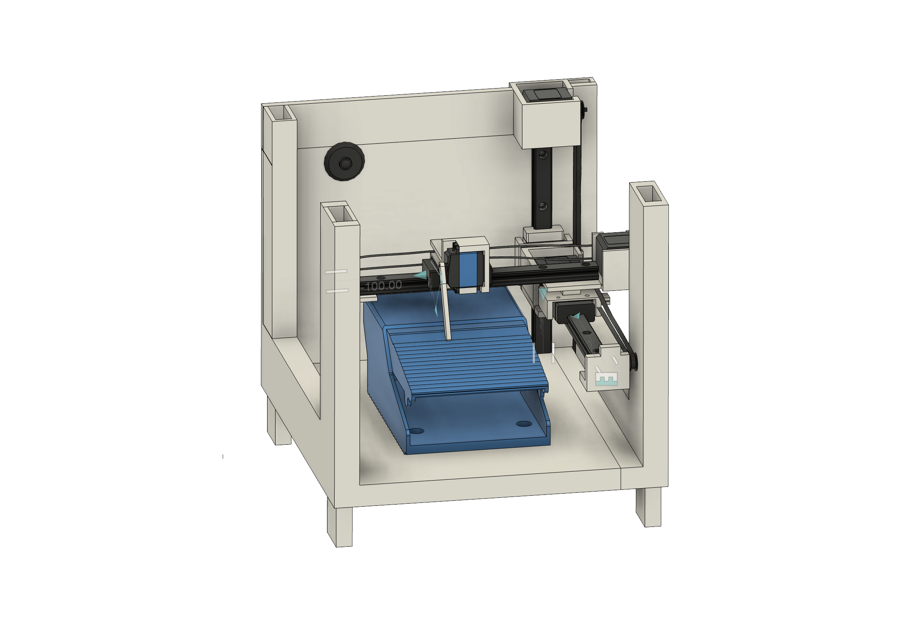
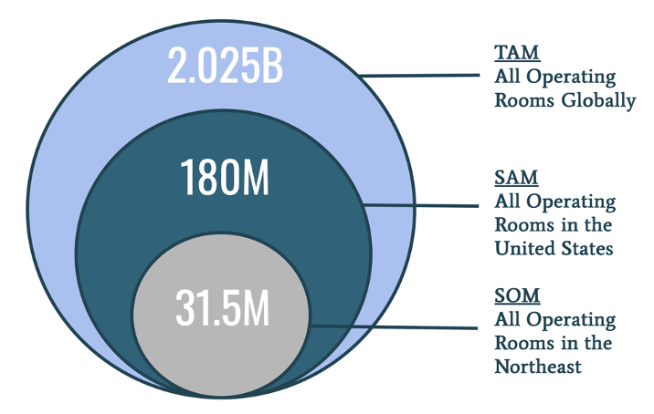
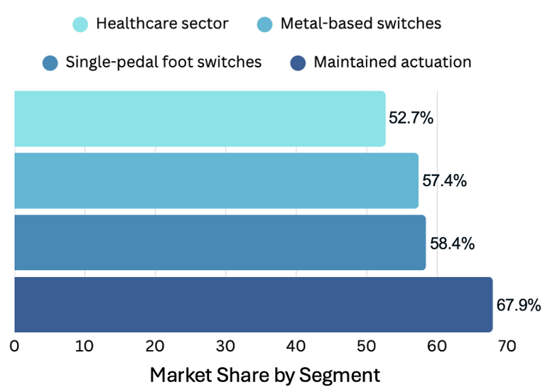
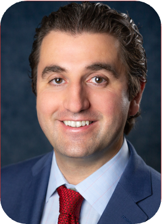

A wireless, wearable, gesture-based interface for controlling surgical devices — without floor pedals, clutter, or missteps.

Surgical foot pedals are hidden, floor-bound, and error-prone. Surgeons routinely activate the wrong device, lose pedal contact, and experience fatigue—introducing unnecessary risk into the OR.
Lost contact with the correct pedal
Activated the wrong pedal
Want a better solution
A first-in-class wearable foot controller that translates intuitive gestures into wireless actuation of existing surgical pedals.
IMU-based gesture recognition replaces floor pedals entirely.
Works with existing Medtronic, Stryker, Olympus, and Ethicon systems.
Visual and haptic confirmation for every command.
Our architecture decouples user input from pedal actuation, enabling rapid learning, low latency, and robust safety.
Over 400,000 operating rooms worldwide rely on outdated pedal systems. Wearable Surgery consolidates multiple devices into a single intelligent interface.


An interdisciplinary team of surgeons, engineers, and translational scientists.
